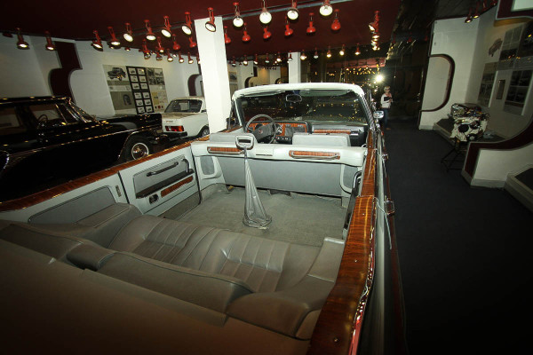
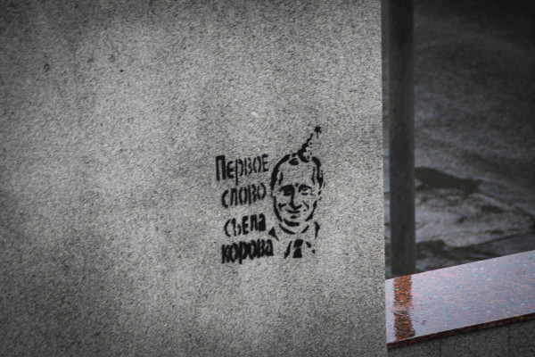

20 июля из мотеля мы продолжили движение по трассе Чебоксары-Нижний Новгород, предварительно перекусив в мотеле, в котором ночевали.
Дорога была вполне однообразна и через пару часов мы въехали в Нижний Новгород, известный даже моему поколению как Горький.
В планах у нас было посещение нижегородского кремля, пешеходной Большой Покровской улицы и музея ГАЗ. Рук и глаз не хватает, поэтому для начала решили ехать в центр, там наверняка есть кремль, а дальше по обстановке. Поиски Кремля с помощью навигатора внезапно усложнились. Весной в Нижнем Новгороде сошёл на какую-то важную дорогу оползень, в связи с чем её летом ремонтировали, в связи с чем изменили движение по некоторым ключевым улицам. Навигатор этого не знал, поэтому приходилось помогать интуиции.
Добравшись до Кремля, я решил помыть машину на автомойке, которая так и называлась «Кремлёвская», а пока я выяснял тонкости навигации у сотрудников автомойки остальные члены экипажа пошли гулять по Кремлю. Спустя минут 40 догнал их и я, правда для этого пришлось подниматься в гору.
С горы, на которой собственно и стоит Кремль, открывается неплохой вид на Волгу и слияние её с Окой. Фоткаемся на фоне.
Сегодня выходной, и в Кремле, конечно же проходят свадьбы
Надо сказать, нижегородский Кремль не впечатлил — вполне себе современный горсад с административными зданиями. Как такового кремля мы не увидели — только лишь стены.
С одной стороны от входа в Кремль — музей военной техники под открытым небом.
С другой — знакомые по казанскому Кремлю торговые ряды в кремлёвской стене. Торгуют одинаковыми сувенирами, конечно.
Мы вышли из Кремля и пошли к машине, спускаясь с внешней стороны стены (с внешней Кремль выглядит солидней и красивей)
В Коромысловой башне кремля, к примеру, заживо зарыта девушка. Дело было так: именно с этой башни началось в 16 веке строительство кремля . Для усиления строения, по бытовавшей тогда среди наших предков-варваров традиции, было принято заложить живое существо, которое первым придёт на это место, в основание башни. Пришла девушка с вёдрами на коромысле, шедшая за водой на речку Почайну. Ну её и зарыли вместе с вёдрами и коромыслом.
Спустившись к машине и сверившись с картой, мы поняли, что музей ГАЗ расположен менно в той стороне, с которой мы только что приехали. Нужно немножко ехать обратно через весь город. Ну нужно, значит нужно.
Заодно смотрим город и он нам не очень. Присущие всем старым городам узкие улицы и большое количество на этих улицах машин не радует каждого конкретного автомобилиста.
С второго раза находим музей ГАЗ. Начинает накрапывать дождь (ведь машина-то чистая!), паркуюсь прямо у крыльца, меня немножко прогоняют чуть дальше.
В музее ГАЗ применена какая-то космическая разработка. Нет, право фотографировать внутри, разумеется там продают, но вот интерьер… Стены и потолок музея тёмно-тёмно бордовые. Освещение редкое и тусклое — вроде как попали на съёмку фильма ужасов. Направленная в потолок вспышка от потолка отразится не имела никакой возможности, потолок поглощал весь свет. Единственным выходом оставалось лупить в лоб (топать в машину за штативом было совсем лень).

Покидаем музей, едем искать пешеходную Большую Покровскую улицу. Которая что? Которая, правильно находится в центре, откуда мы и приехали недавно.
Вновь моросит дождь, под дождём немножко гуляем, заходим в кафе.
В кафе умудряемся оставить рюкзак с вспышкой, пультом и вторым объективом. Пролежавший минут 20 рюкзак не вызвал ни подозрений ни желания украсть себя и вернулся к законным владельцам.
Под окончательно мокрую погоду покидаем Нижний Новгород, чтобы успеть во Владимир.
На трассе не смог проехать мимо приятного цвета плетёных корзин, и хотя, корзину не купил, крынка и глиняный кот стали очередными сувенирами из путешествия.
Владимир ожидаемо встретил обилием разного рода церквей, соборов и храмов.
Среди достопримечательностей города у нас значилась и тюрьма для особо опасных преступников, о которой пел Михаил Круг.
Внутрь самого Владимирского Централа нас, к счастью, не пригласили, да и самой тюрьмы по периметру толком не видно.
Проехались-пофотались по Владимиру.

Заехали в полюбившийся Макдональдс, около которого стоит такая вот «в тему скамейка».
На улице темнеет, но решаем перед Москвой заехать ещё в Суздаль. Выезжаем из Владимира, темнеет, спешно ищем ночлег и находим весьма забавное место — мотель «Печки-Лавочки». На первом этаже какой-то пьяный день рождения, время позднее — дамы приглашают кавалеров и всё такое. Но хочется спать и выбирать не приходится, к тому же внутри весьма забавно.
Краткие выводы: Нижний Новгород не впечатлил, Музей ГАЗ, несмотря на дизайн интерьера, понравился. Владимир красив, но осмотрен в спешке
Ночлег перед Суздалем обходится в привычные 2000 рублей.